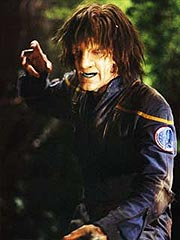
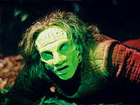
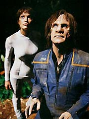

|
MANCHETE
DO EPISDIO
Episdio
apresenta vrios clichs e
histria desligada do arco Xindi
Episdio
anterior | Prximo
episdio
Sinopse:
Um aliengena foge correndo por uma floresta, perseguido por trs homens de outra espcie, vestidos com roupas pressurizadas. Ao alcanarem o fugitivo, no hesitam em inciner-lo.
Em outra parte da Extenso Dlfica, o capito Archer investiga o banco de dados obtido da nave pirata para descobrir a rota pregressa do cargueiro Xindi atacado pelos bandidos. Ele chama T'Pol ao Centro de Comando (obrigando-a a interromper mais uma sesso de terapia Vulcana com Trip) e comunica sua descoberta, ordenando que Travis trace um curso para o ltimo planeta pelo qual passaram os Xindis.
Ao chegar l, Archer lidera um grupo de descida, composto por ele, T'Pol, Hoshi Sato e Malcolm Reed. Eles encontram na superfcie uma pequena nave de configurao Xindi e um corpo --incinerado. Mas no h tempo para mais estudos, pois logo o quarteto comea a sofrer violentas mutaes. T'Pol parece ser mais resistente e mantm sua conscincia, mas Reed, Archer e Sato logo esto totalmente transformados em aliengenas.
Nem mesmo a conscincia e a lngua retida por eles. T'Pol tenta convenc-los a voltar Enterprise, comunicando-se com a ajuda do tradutor universal, mas sem sucesso. Eles parecem determinados a procurar um lugar chamado Urquat, supostamente sua cidade natal.
Enquanto isso, a bordo da Enterprise, Trip no tem a menor idia de onde esto seus tripulantes -- embora os sensores detectem um sinal Vulcano, os trs sinais humanos sumiram, dando lugar a aliengenas. Phlox sugere que talvez Archer, Reed e Sato tenham sido literalmente transformados nos aliengenas.
 Trip prepara um grupo de resgate, munido de roupas pressurizadas. Eles conseguem encontrar T'Pol e os outros, mas s Reed capturado. A Vulcana instrui Trip a levar o oficial ttico de volta Enterprise, enquanto ela prosseguiria com os outros.
O engenheiro segue as instrues e Reed mantido numa cmara selada de descontaminao, que permite que Phlox determine a causa das mutaes: eles foram afetados por um vrus. Aparentemente, as clulas K do sistema imunolgico Vulcano conseguem combat-lo, o que sugere a possibilidade de desenvolvimento de um antiviral contra a infeco.
Mas ele no tem muito tempo para pesquisar, pois logo duas naves aliengenas surgem nas imediaes do planeta. Seu capito, Tret, ordena a Trip que prepare-se para ser abordado, pois carrega um homem contaminado com o vrus, que precisa ser exterminado para evitar o surgimento de uma epidemia.
O engenheiro no se intimida e diz que o lder aliengena pode vir a bordo para discutir o problema, mas no ser autorizado a levar Reed e, se insistir com a violncia, ter uma batalha nas mos. Hesitante, o aliengena concorda em vir a bordo. L, ele explica a origem do vrus: trata-se de uma criao do povo que antes vivia neste planeta, os Lokek. Quando sua espcie entrou em extino, criou um vrus mutagnico, capaz de converter qualquer humanide em um deles, a fim de manter a espcie viva. Esse vrus certa vez contaminou 10 milhes de pessoas no planeta de Tret, que foram mortas para evitar que sua espcie inteira fosse extinta. Segundo ele, no h outra maneira de lidar com esse vrus.
Phlox, entretanto, acha que pode criar um antiviral baseado no DNA de T'Pol -- mas precisa de uma amostra da Vulcana. Tret alertado por seus comandados sobre a deteco de outros trs sinais de infectados na superfcie do planeta. Trip diz que so seus tripulantes, mas o aliengena no se interessa: ordena que T'Pol seja capturada, e os outros dois, mortos.
O aliengena parte da Enterprise e o tempo de Trip e Phlox est se esgotando. Ento o engenheiro se lembra que pode conseguir alguma amostra do DNA de T'Pol em uma fruta que ela mordeu durante a ltima sesso de terapia dos dois. Ele corre e leva a fruta ao mdico, que comea a trabalhar.
 Enquanto isso, prepara uma equipe de resgate para Archer, T'Pol e Hoshi. Os trs chegaram a encontrar Urquat, mas a cidade est em frangalhos, desabitada h muito tempo. Os trs quase so encontrados pela equipe "descontaminadora" de Tret, mas Trip aparece bem na hora para defender seus colegas e lev-los a bordo da Enterprise.
A NX-01 parte em velocidade mxima, mas as naves de Tret iniciam a perseguio. A Enterprise no preo para o combate e Trip est com problemas para manter a nave intacta. Tret pede a rendio quando Archer aparece na ponte, parcialmente recuperado, indagando sobre o porqu do ataque. Phlox informa a Tret que Archer era um dos contaminados, que est reagindo bem ao tratamento. Cessadas as hostilidades, a Enterprise concorda em ceder uma dose do antiviral para que os aliengenas possam desenvolver um meio mais civilizado de conter a epidemia.
Resta a Phlox destruir a ltima amostra do vrus. Ele pede autorizao ao capito, que recusa. Archer no quer ser o responsvel pela destruio da ltima chama que mantm os Lokek vivos de algum modo. Ordena que o mdico mantenha a amostra preservada, em stasis.
Comentrios:
Embora o "gancho" para a aventura seja o arco Xindi, est claro que temos em
"Extinction" mais um segmento convencional de Enterprise, que poderia muito bem estar em qualquer uma das duas temporadas anteriores. Apesar de contar com vrios clichs incmodos, ele traz inovaes suficientes para no ser considerado perda total.
Para comear, agrada o uso de uma analogia com as formas primitivas de combate a doenas realizadas na Terra. O procedimento de "descontaminao" dos aliengenas para combater o vrus tem desagradvel similaridade com mtodos usados para extinguir surtos de peste negra, por exemplo.
Atualizando a histria para um cenrio futurista sem dvida foi um esforo interessante. E a premissa por trs do vrus em si tambm acaba funcionando -- o ltimo suspiro de uma espcie prestes a se extinguir.
O que mais incomoda aqui, na verdade, o aspecto "jornadesco" do episdio: para variar, Phlox consegue em cinco minutos curar uma doena cuja soluo havia escapado a outros mdicos por dcadas. E a Enterprise no se mostrou tecnologicamente superior s naves aliengenas para justificar tamanho salto cientfico.
E, mesmo que Phlox fosse realmente um gnio capaz de tamanha faanha, a velocidade com que Archer e Sato se recuperam, para dar uma lio a Tret e seus colegas de mentalidade medieval muito pouco crvel. No funciona, e no h nada que se possa fazer quanto a isso.
Tambm temos o clich da "indestrutvel" fisiologia Vulcana, que a tudo resiste sem pestanejar. Embora eu no consiga imediatamente pensar em algo para manter a histria e ao mesmo tempo evitar esse chavo, essa era a obrigao de Andr Bormanis, o roteirista do episdio, infelizmente negligenciada.
Os produtores continuam insistindo em aprofundar o relacionamento de Trip e T'Pol via a bobagem introduzida em
"The Xindi". Felizmente aqui a apelao bem menor, mas no resolve muito, ao ser substituda por piadas infames ligadas ao chul de Trip. Trocaram seis por meia dzia, basicamente.
 O grande destaque do episdio fica por conta das atuaes de Scott Bakula, Linda Park e Dominic Keating. Apesar das dificuldades impostas pela maquiagem e pelos papis em si, os atores conseguem dar aparncia bem realista e orgnica a seus novos comportamentos aliengenas (evidentemente auxiliados por um bom trabalho dos editores de sons, que incluram todo tipo de chiado esquisito na fala deles).
A maquiagem, como de costume, espetacular, e o efeito dessa vez foi ajudado pela magia das imagens geradas por computador, que deram incrvel vivacidade s transformaes ocorridas com Archer, Reed e Hoshi. Tivemos at mesmo uma tomada mostrando as transformaes nos rgos internos de Archer.
E a qualidade dos efeitos especiais no se limita isso. A apresentao de Urquat (tanto de forma exuberante, em sonho do capito Archer transformado, como destruda, como est na realidade) espetacular, com uma tomada panormica de dezenas de construes e centenas de pessoas. Apesar disso, a cena grita "CGI" o tempo todo, o que no contribui muito para a sensao de realismo.
A direo de LeVar Burton consciente, eficiente nas cenas de perseguio pela floresta, capaz de imprimir a velocidade e o dinamismo necessrios as sequncias. Apesar dessa qualidade, numa srie que j fez tantas "cenas de perseguio em floresta/caverna", talvez fosse o caso de arriscar um pouco mais, inovar, buscar ngulos inusitados. O esquema aqui bastante burocrtico e deixa a histria falar por si.
Para concluir, a discusso filosfica a respeito da preservao do vrus parece igualmente falsa. Os Lokek esto, para todos os efeitos, extintos. A preservao da amostra, que jamais poder ser usada para restaurar a populao Lokek, no apresenta vantagem alguma, exceto a manuteno de um perigo biolgico desnecessrio. A preocupao de Archer soa falsa, apesar de todas as boas intenes.
No fim das contas, temos um episdio apenas "passvel", com elementos interessantes e uma srie de clichs. Voltamos aqui tnica mdia das temporadas anteriores de
Enterprise. Nada que seja terrivelmente ruim, apenas brando demais para exigir uma segunda olhada.
Citaes:
Tret - "Your ship is in restricted space."
("Sua nave est em espao restrito.")
Tucker - "Sorry. It wasnt very well marked."
("Sinto muito. No estava bem marcado.")
Archer - "This was created as a final effort to preserve a civilization of people. That species we became... they cease to exist the moment this virus is gone. We came out here to stop the Xindi from destroying humanity, Ill be damned if Im going to have a hand in destroying another race in the process."
("Isso foi criado como um esforo final para preservar uma civilizao de pessoas. Aquela espcie que nos tornamos... ela cessa de existir no momento em que o vrus sumir. Viemos aqui impedir os Xindi de destruir a humanidade, eu serei condenado se tiver a ver com a destruio de outra raa no processo.")
Trivia:
 As filmagens duraram sete dias, concludos em 29 de julho de 2003.
As filmagens duraram sete dias, concludos em 29 de julho de 2003.
Daniel Dae Kim faz sua segunda apario como o corporal Chang.
Linda Park disse: "Acabei de interpretar uma salamandra aliengena primitiva e superforte, em que tive de usar uma cabea de borracha e lentes de contato (eu ajoelho para o John [Billingsley] depois dessa experincia). Apesar da dor, acho que vai ser um timo episdio."
Ficha
tcnica:
Escrito por Andr Bormanis
Direo de LeVar Burton
Exibido em 24/09/2003
Produo:
055
Elenco:
Scott
Bakula como Jonathan Archer
Jolene Blalock como
T'Pol
John Billingsley
como Phlox
Anthony Montgomery
como Travis Mayweather
Connor Trinneer como
Charlie 'Trip' Tucker III
Dominic Keating como
Malcolm Reed
Linda Park como Hoshi Sato
Elenco convidado:
Daniel Dae Kim como corporal Chang
Roger Cross como Tret
Troy Mittleider como Palmer
Craig Baxley Jr. como agente descontaminador 1
Philip Boyd como oficial de comunicaes
Kiante Elam como humanide aliengena
Jimmy Ortega como agente descontaminador 3
Keith Schindol como agente descontaminador 2
Brian Williams como dubl de agente descontaminador
Episdio
anterior | Prximo
episdio
|